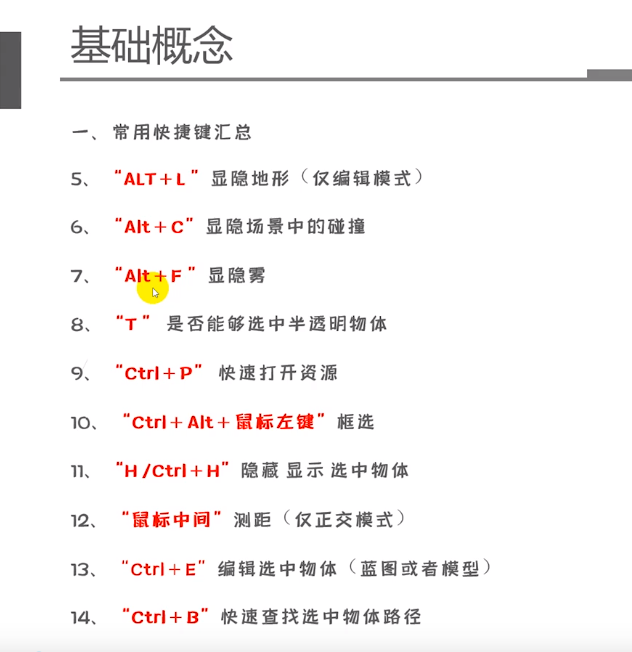
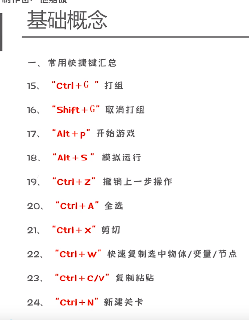
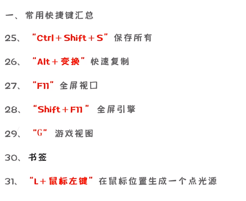
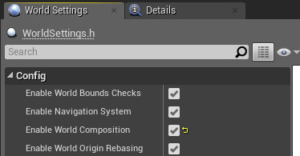

- 常用快捷键



-
变更路线节点：
Reroute Node -
Execute Console Command命令- 设置分辨率
r.setRes 1920x1080 r.ScreenPercentage 200：双倍渲染
- 设置分辨率
UE4像素流送系统§
特点：§
- 流送并非播放预先录制的视频片段，而是播放虚幻引擎实时生成的渲染帧和音频。
- 用户可通过自己的浏览器对体验进行控制，将键盘、鼠标、触摸事件和播放器网页发出的自定义事件发送回虚幻引擎。
优点：§
函数§
Quit Game：退出游戏Is Valid：如果对象可用（不为null或者not pending kill则返回trueBreak Rotator：将旋转器分解为以度为单位的侧倾角（Roll），俯仰角（Pitch）和偏航角（Yaw）Set Render Transform Angle：设置渲染变换角度Set Style：设置按钮的样式Play Animation：播放动画Load Stream Level：加载流送关卡Unload Stream Level：卸载流送关卡Set Show Mouse Cursor：设置是否显示鼠标Get Parent：获取当前控件的父控件Get Children Count：获取当前容器控件中的子控件数量（需要通过Get Parent获取）Get Children At：通过索引获取对应的控件（需要通过Get Parent获取）Set Is Enabled：设置控件是否可以和用户交互Execute Console Command：执行控制台命令DisableAllScreenMessages：禁止所有屏幕信息
Viewport§
Get Mouse Position on Platform：获得鼠标在当前平台的位置Get Mouse Position on Viewport：获得鼠标在当前视口的位置
Time§
Set Timer by Event：设定一个计时器来执行事件委托，设置已经存在的计时器（如设置自身）将会更新参数。Clear and Invalidate Timer by Handle：手动清除设置的定时器
Game§
Quit Game：退出当前游戏
Rendering§
Get Supported Fullscreen Resolution：获得支持的全屏分辨率列表
Settings§
Get Game User Settings：返回游戏本地的设置（分辨率，窗口模式，缩放设置等）Get Fullscreen Mode：返回用户设定的窗口全屏模式Switch on EWindowMode：从Fullscreen、Windowed Fullscreen、Windowed匹配与输入相同的输出值。
Set Fullscreen Mode：设置用户设定的窗口模式Set Screen Resolution：设置屏幕分辨率Apply Resolution Settings：应用分辨率设置- ``
Window§
Get Window Mode：返回当前窗口的模式
Transformation§
Set Relative Scale 3D：设置相对于其父项的组件的非均匀比例
User Interface§
Get User Widget Of Object：返回此组件显示的用户小部件对象
Flow Control§
Delay：延迟执行潜在操作（在几秒钟内指定）。倒计时时再次调用将被忽略。
Material：材质§
Set Scalar Parameter Value：在材料收集实例上设置标量参数值
Widget§
Remove from Parent：从其父窗口小部件中删除该窗口小部件。如果将此s小部件添加到播放器的屏幕或视口中，则也会从这些容器中删除。
Sequence§
Varibale Type: Level Sequence Actor：变量类型get Sequence Player：获取序列玩家Play：使用当前播放速率从当前时间光标位置开始向前播放。Play Looping：从当前时间光标开始向前播放，循环特定次数，（-1表示无线循环）Stop：停止播放，将时间光标移至最后
Appearance§
Image控件变量Set Brush from Texture：设置图片
Slot§
Slot as Canvas Slot：将子对象上的插槽对象作为画布插槽获取，从而允许你操纵布局信息Set Position：设置slot的位置Get Position：获取slot的位置
Layout§
Canvas Slot§
set Position：设置插槽的位置
Game§
Get Player Controller：返回玩家控制器的索引Get HUD：获取当前的屏幕
Get Player Camera Manager：返回指定玩家索引的玩家摄像机管理器Get Camera Rotation：返回相机的当前旋转
Math§
Float§
Truncate：四舍五入Map Range Unclamped：从一个范围映射到另一个范围
Button§
Set Style：设置按钮的倍增背景色
Text§
Set Text：设置Text控件的textSet Color and Opacity：设置Text控件字体的颜色和透明度
Panel§
Get All Children：获取Panel下的所有子控件
Array§
GET：输入一个数组和一个索引，返回该索引对应元素的拷贝Clear：清除数组中的所有元素Length：获取数组长度
String§
Append：拼接字符串，返回新字符串
Animation§
Is Animation Playing：判断一个动画是否播放Reverse Animation：如果动画已播放，则反转播放动画
Transform§
Set Render Scale
关卡流送（Level Streaming）§
在游戏时异步加载和卸载关卡，降低内存使用率，创建无缝的世界场景。
世界场景构成（World Composition）§
世界场景构成用于创建大型场景的特定关卡流送形式。关卡分布在平面网格中，并在玩家靠近时流入。
激活世界场景构成§
- 启用
世界场景设置(World Settings)中的启用世界场景构成(Enable World Composition)标记来激活 - 禁用
世界场景原点移位(World origin shifting)：关闭启用世界场景构成(Enable World Composition)

关卡层级(Levels Hierarchy)§
"关卡"窗口中的条目表示世界场景的层级。
UMG控件§
公共属性§
-
Slot：Canvas Panel中的Slot：设置控件在屏幕显示的位置和大小Overlay中的Slot：设置控件相对父级的位置
-
Tool Tip Text：提示文字，可以绑定自定义UMG -
Visiblity：可视性VisibleCollapsed：隐藏且不占位置Hidden：隐藏且占位置Not Hit-Testable(Self & All Child)：可见但无交互Not Hit-Testable(Self Only)：可见但子级可交互
-
Transform：设置控件的位移缩放等属性piovt用来设置中心点
-
Clipping：裁切 -
Is Volatile：是否缓存控件 -
Navigation：手柄导航属性
Common中的控件§
-
Border：可放图片，可以有一个子集 -
Button：按钮，点击事件 -
Check Box：复选框 -
Image：无子集 -
Named Slot：在用户创建的UMG下放置，相当于占位，可以让用户创建的UMG放置子集 -
Progress Bar：进度条 -
Rich Text Block：富文本 -
Slider：滑动条 -
Text：文字
Panel中的控件§
-
Canvas Panel： -
Horizontal Box：横向排列 -
Vertical Box：竖向排列 -
Overlay：重叠 -
Size Box：可覆盖子控件的原始尺寸 -
Scale Box：缩放框 -
Scroll Box：带滚动条 -
Uniform Grid Panel：可宫格排列 -
Grid Panel：宫格化排列，制作背包 -
Safe Zone：异形屏幕的安全区 -
Widget Switcher：控件切换器，像页签，子控件不能太多，会卡死 -
Wrap Box：可以让子控件换行
Input中的控件§
-
ComboBox：下拉列表 -
Editable Text：可编辑文本 -
Editable Text(Multi-Line)：可换行的可编辑文本 (按shift + Enter换行) -
Text Box：文本输入框 -
Text Box (Multi-Line)：多行文本输入框 -
Spin Box：可拖动缩放框
Lists中的控件§
List View：
坐标空间术语§
空间§
| 虚幻中的空间 | 其他名称 | 描述 |
|---|---|---|
| 切线(Tangent) | 正交(可能在插值之后偏离)，可以是左旋或右旋。TangentToLocal变换仅包含旋转，因此它是标准正交(Orthonormal)(可以通过换位反转) | |
| 局部(Local) | 对象空间(Object Space) | 正交，可以是左旋或右旋(三角形剔除顺序需要调整)。LocalToWorld变换包含旋转、非等分缩放(包括可能改变缠绕顺序的负非等分缩放)和平移 |
| 世界场景(World) | WorldToView变换仅包含旋转和平移，因此视图空间中的距离与世界场景空间中的距离相同 | |
| 平移世界场景(TranslatedWorld) | 世界场景：平移世界场景-预览平移 | |
| 平移世界场景：世界场景+预览平移 | ||
| 平移的矩阵用于从组合的变换矩阵中移除相机位置，可在变换顶点时提高精度 | ||
| 视图(View) | 摄像机空间(CameraSpace) | ViewToClip变换包含x轴和y轴上的缩放，但不包含平移(如果平移的话将会是偏心投影)。它缩放并平移z轴。它还会应用投影来转换为齐次裁剪空间。 |
| 裁剪(Clip) | 齐次坐标(HomogenlousCoordinates)，后摄影空间(PostProjectionSpace)，投影空间(ProjectionSpace) | 应用透视投影矩阵之后。请注意，裁剪空间中的W与视图空间Z中的相同 |
| 屏幕(Screen) | OpenGL中的标准化设备坐标(NormalizedDeviceCoordinates) | 经过透视分割之后： |
| 左/右：-1,1 | ||
| 上/下：1,-1 | ||
| 近/远：0,1(OpenGL RHI需要将此变换为-1,1) | ||
| 视口(Viewport) | 视口坐标(ViewportCoordinates)，窗口坐标(WindowCoordinates) | 以像素计： |
| 左/右：0,宽-1 | ||
| 上/下：0,高-1 |
空间变换§
应该始终使用 X To Y 的形式对空间之间的变换命名。
示例：
WorldToView
TranslatedWorldToView
TangentToWorld
变量(Variable)§
- 文字颜色变量类型：
Slate Color - 图片颜色变量类型：
Linear Color - 图片变量类型：
Slate Brush - 图片数组变量类型：
Texture 2D - 定时器变量类型：
Timer Handle - 字体变量类型：
Slate Font Info